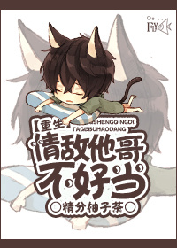

Wei Han, de 27 años, es un poco gordo, un poco tonto y un poco tonto, de corazón puro y enamorado, y su novia, que había estado junto a él durante siete años, al final, fue robada por Qi ZhiFan una mañana.
Con el corazón profundamente roto y desesperado, se pasó de la raya con los atracones y terminó patéticamente asfixiado hasta morir...
Afortunadamente, recibió una segunda oportunidad, pero su tiempo, posición y destino se deformaron, y el él que volvió a tener veinte años siguió a su madre que se volvió a casar a la familia Qi, convirtiéndose en el hermano mayor no relacionado con la sangre de Qi ZhiFan.
Bueno, Wei Han juró que esta vez, debe cambiar su destino de tirado como carne de cañón, y dado que se ha convertido en el hermano mayor de su rival amoroso, definitivamente puede atormentar a este hermano pequeño hasta la muerte, restaurando su posición como el superior legítimo. ¡y lleva rápidamente su trasero a casa!
Sin embargo, ¿por qué el desarrollo de la trama está cada vez más fuera de su control?
¿Por qué Qi ZhiFan lo mira con una mirada abrasadora y ardiente, actuando cada vez más cuestionable (⊙ o ⊙) eh?
Por lo tanto, Wei Han fue empujado hacia abajo en un fondo oficial...